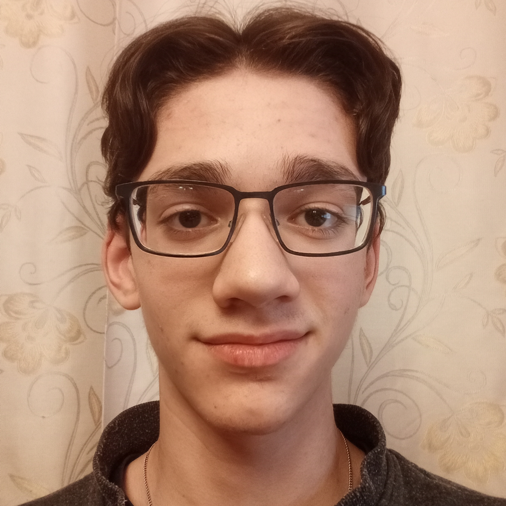

Minust:
Ma loon Telegrami bote ja automatiseeritud lahendusi Pythonis.
Ma arendan loogikat, struktuuri ja kasutusmugavust.
Lisaks olen tuttav ka veebidisainiga.
Minu oskused:
- Python
- Telegrami botide arendamine
- Automatiseerimine ja skriptid
- Piltide töötlemine
- Veebidisain
- UI/UX põhialused
- Git
Мои проекты (локальные Telegram-боты):
- @Generate00001_bot — bot piltide genereerimiseks
- @Noteday_0001_bot — bot märkmete ja meeldetuletuste jaoks
- @Flight00001_bot — testbot lendude jaoks
- @fon6278_bot — bot taustade redigeerimiseks
- @Decompose3129_Bot — bot piltide töötlemiseks
